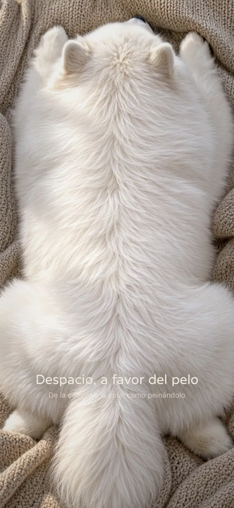
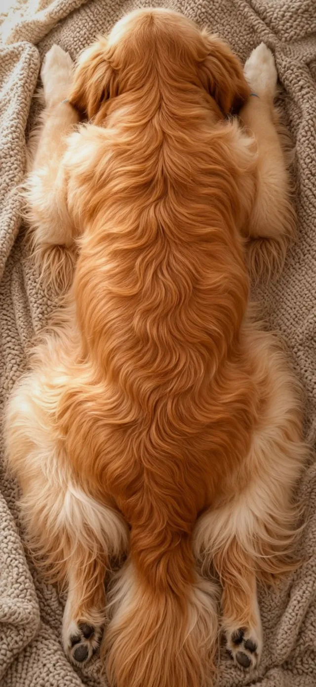
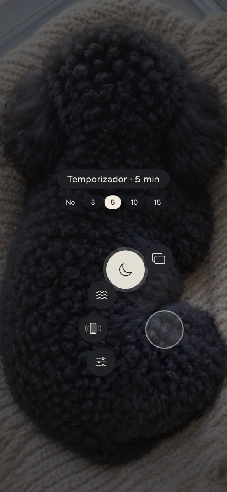
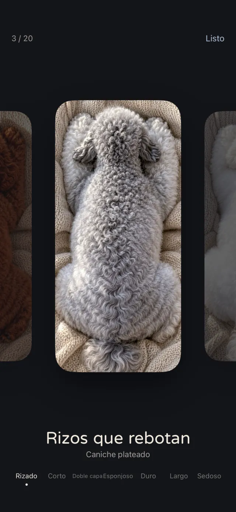

App tranquila para iPhone, para antes de dormir
Acaricia a un perro dormido
y baja el ritmo.
Acaricia despacio a favor del pelo. El pelo se inclina bajo el dedo y vuelve a su sitio cuando lo sueltas. Si sigues acariciando, la respiración del perro se hace más lenta hasta que se queda dormido.
Descargar en el App Store- ✓ 20 perros, 7 tipos de pelo
- ✓ Sin puntuaciones, tareas ni comida
- ✓ No necesita cuenta

Tacto
El pelo se mueve de verdad
Si acaricias a favor del pelo, este se tumba hacia tu dedo y luego vuelve despacio a su posición. Si acaricias a contrapelo, el pelo se eriza durante un rato antes de asentarse. Los rizos rebotan, el pelo largo sigue a tu mano y el pelo corto queda liso.

Menú
Deja el dedo quieto y el menú se abre junto al pulgar
Mientras acaricias, no hay nada en la pantalla. Para cambiar de perro o configurar el temporizador, mantén el dedo quieto durante 0,8 segundos y se abrirán cinco botones junto al pulgar. Desliza hasta uno sin levantar el dedo y suéltalo.

Perros
20 perros, para conocerlos de uno en uno
El poodle negro, el de pelo corto color latte, el Shiba Inu, el samoyedo y el golden retriever son gratuitos. Los otros 15 son para miembros: puedes probar uno durante 20 segundos o ver un anuncio para acariciarlo durante el día.

Antes de dormir
Cuando el perro se duerme, tú también estás cerca de dormirte
Tras aproximadamente un minuto de caricias lentas, el perro duerme profundamente y la pantalla se atenúa. Con el temporizador de sueño activado, la respiración se apaga poco a poco y la pantalla se pone negra al terminar el tiempo. Toca una vez para volver.
▲ No hay botones en la pantalla mientras acaricias.
Sirve para
- Estar en la cama antes de dormir
- Cuando la mente no se calma
- Esperar el autobús o hacer cola
- Echar de menos a tu propio perro
Datos
| Perros | 20 (5 gratuitos) |
|---|---|
| Pelo | 7 tipos: rizado, corto, doble capa, erguido, áspero, largo, sedoso |
| Sonido | Solo una respiración muy tenue, que se puede desactivar |
| Vibración | Un toque ocasional cuando el perro reacciona, se puede desactivar |
| Cuenta | No hace falta |
| Precio | Gratis con anuncios; la membresía es un pago único |
| Requisitos | iPhone con iOS 17 o posterior |
Los anuncios solo aparecen en la parte inferior del selector de perros y de los ajustes. La pantalla de caricias nunca muestra anuncios.
Gratis
- 5 perros
- Temporizador de sueño, sonido de respiración y vibración
- Anuncios en la parte inferior del selector de perros y de los ajustes
- Ver un anuncio para acariciar durante el día a un perro bloqueado
Miembro (pago único)
- Los 20 perros
- Sin anuncios
- Incluye los perros que se añadan más adelante
- Se restaura con la misma cuenta de Apple en un teléfono nuevo